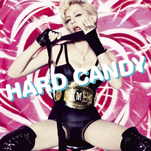
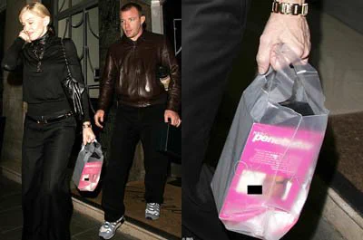
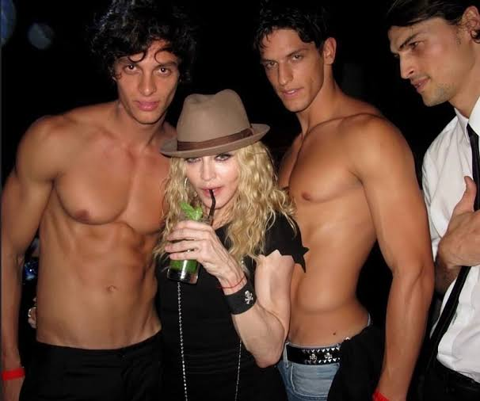

Hard Candy es el onceavo álbum de estudio de Madonna. Lanzado a la venta en 2008, tuvo un recibimiento comercial moderado a lo largo del mundo. Logró posicionar su sencillo líder "4 Minutes" en el #3 del Billboard Hot 100 de E.E.U.U. y logró llegar al #1 en Reino Unido por 4 semanas. Sin embargo, los demás sencillos no tuvieron el mismo éxito y Madonna empezó a ser boicoteada otra vez de las radios debido a su edad de 50 años en aquel momento. Además, fue su álbum menos vendido hasta ese momento y también el que peores críticas obtendría. En este álbum, Madonna deja de lado su faceta innovadora y decide tomar influencias de Justin Timberlake, Britney Spears, Nelly Furtado y Kanye West para este proyecto. En consecuencia, contrató a Timbaland y Pharrell Williams como productores de Hard Candy para darle un sonido fresco y en tendencia. Debutó en el #1 del Billboard 200 de E.E.U.U.

Madonna saliendo de un hotel con un strap on junto a su esposo de aquel momento, el director Guy Ritchie.

Madonna de fiesta en Brasil tras divorciarse después de 8 años de matrimonio con Guy Ritchie.